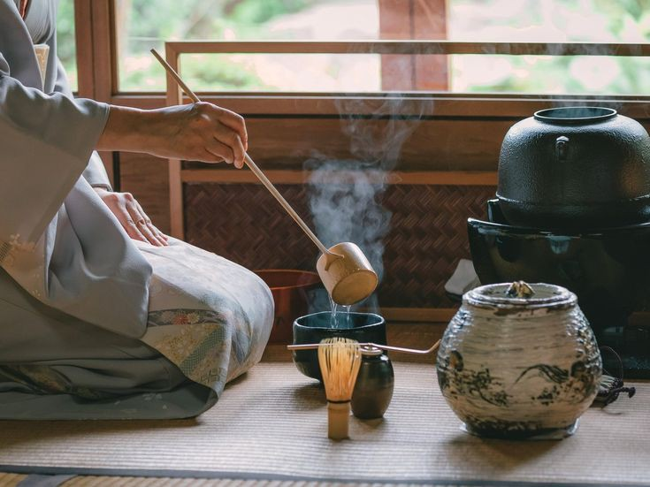

Upacara minum teh adalah seni menyajikan teh dengan penuh kesopanan dan ketenangan. Tradisi ini dipengaruhi oleh ajaran Zen dan melibatkan peralatan khas seperti mangkuk teh (茶碗, chawan) dan sendok bambu (茶杓, chashaku).

B. Kimono dan Yukata
Pakaian tradisional Jepang yang masih sering digunakan dalam acara-acara khusus.
Kimono: Digunakan dalam acara formal seperti pernikahan atau upacara Shinto.
Yukata: Versi kasual dari kimono, biasanya dipakai saat festival musim panas.
C. Hanami (花見) – Festival Melihat Bunga Sakura
Setiap musim semi, masyarakat Jepang berkumpul di taman untuk menikmati keindahan bunga sakura. Hanami sudah menjadi tradisi sejak zaman Heian dan sering diiringi dengan piknik bersama keluarga atau teman.
2. Seni dan Hiburan Jepang
A. Kabuki, Noh, dan Bunraku
Kabuki: Teater tradisional dengan kostum mencolok dan riasan tebal.
Noh: Pertunjukan drama yang lebih tenang dan sering menggunakan topeng kayu.
Bunraku: Teater boneka tradisional yang dimainkan oleh dalang terlatih.
B. Anime dan Manga
Jepang dikenal sebagai pusat industri anime dan manga. Beberapa genre populer meliputi:
Shōnen: Naruto, One Piece
Shōjo: Cardcaptor Sakura, Sailor Moon
Seinen: Berserk, Tokyo Ghoul
Isekai: Sword Art Online, Re:Zero
3. Makanan Khas Jepang
A. Sushi dan Sashimi
Hidangan berbasis ikan mentah yang disajikan dengan nasi atau langsung dimakan tanpa tambahan lainnya.
B. Ramen
Mie Jepang dengan kuah khas seperti miso, shoyu (kecap asin), dan tonkotsu (kaldu tulang babi).
C. Takoyaki dan Okonomiyaki
Takoyaki: Bola tepung berisi potongan gurita.
Okonomiyaki: Pancake Jepang yang diisi dengan kol, daging, dan saus khas.
4. Etika dan Kebiasaan di Jepang
A. Membungkuk (お辞儀, Ojigi)
Membungkuk adalah cara utama menunjukkan rasa hormat. Ada beberapa jenis ojigi, seperti:
Eshaku (会釈, sekitar 15°): Salam santai.
Keirei (敬礼, sekitar 30°): Salam resmi, seperti untuk atasan di kantor.
Saikeirei (最敬礼, sekitar 45°): Salam paling hormat, digunakan dalam permintaan maaf serius.
B. Kebiasaan Makan
Jangan menusukkan sumpit ke dalam nasi karena menyerupai ritual pemakaman.
Jangan mengoper makanan langsung dari sumpit ke sumpit.
C. Budaya Kerja
Jepang terkenal dengan etos kerja yang disiplin. "Karōshi" (kematian karena kerja berlebihan) menjadi perhatian serius, sehingga pemerintah kini mendorong keseimbangan kerja dan hidup.
5. Festival dan Perayaan di Jepang
A. Shogatsu (Tahun Baru Jepang, 正月)
Tahun baru adalah perayaan terbesar di Jepang dengan tradisi seperti:
Memakan osechi ryori (makanan khas tahun baru).
Mengunjungi kuil (hatsumode).
B. Tanabata (七夕祭り)
Festival di mana orang menulis harapan di kertas berwarna dan menggantungnya di pohon bambu.
C. Obon (お盆)
Festival untuk mengenang leluhur. Biasanya ditandai dengan tarian Bon Odori dan penerangan lentera.
6. Teknologi dan Kehidupan Modern
Meskipun terkenal dengan tradisi, Jepang juga menjadi pusat inovasi teknologi, seperti:
Robot humanoid (ASIMO).
Transportasi canggih seperti Shinkansen (kereta peluru).
Tren budaya pop seperti idols dan virtual YouTubers (VTuber).
7. Kepercayaan dan Agama di Jepang
Jepang memiliki kepercayaan yang unik, di mana banyak orang menggabungkan unsur Shinto dan Buddhisme dalam kehidupan sehari-hari.
A. Shinto (神道) – Kepercayaan Asli Jepang
Shinto adalah agama asli Jepang yang berfokus pada pemujaan dewa-dewa (kami). Tempat ibadahnya disebut jinja (神社, kuil Shinto), dan pengunjung sering melakukan ritual seperti:
Temizu (手水): Mencuci tangan dan mulut sebelum berdoa.
Melempar koin dan membunyikan lonceng sebelum menyampaikan permohonan.
B. Buddhisme di Jepang
Buddhisme diperkenalkan dari Tiongkok dan Korea, dan memiliki berbagai aliran seperti Zen dan Jodo. Kuil Buddhis (寺, "tera" atau "oji") sering dikunjungi saat acara pemakaman dan peringatan leluhur.
C. Festival Keagamaan
Setsubun (節分): Perayaan awal musim semi dengan melempar kacang kedelai untuk mengusir roh jahat.
Shichi-Go-San (七五三): Upacara untuk anak-anak berusia 3, 5, dan 7 tahun agar diberkati kesehatan dan keberuntungan.
8. Pendidikan dan Sistem Sekolah di Jepang
Jepang memiliki sistem pendidikan yang disiplin dan kompetitif.
A. Struktur Pendidikan Jepang
Sekolah Dasar (小学校, Shōgakkō): 6 tahun
Sekolah Menengah Pertama (中学校, Chūgakkō): 3 tahun
Sekolah Menengah Atas (高校, Kōkō): 3 tahun
Universitas (大学, Daigaku): 4 tahun
B. Budaya Sekolah di Jepang
Seragam sekolah (制服, seifuku) sangat khas dan menjadi bagian dari budaya pop.
Klub ekstrakurikuler (部活, bukatsu) seperti klub olahraga dan musik sangat populer.
Festival budaya (文化祭, bunkasai) di sekolah adalah acara besar yang melibatkan seluruh siswa.
9. Bahasa Jepang dan Sistem Penulisannya
Jepang memiliki sistem tulisan unik yang terdiri dari tiga jenis karakter:
A. Hiragana (ひらがな) dan Katakana (カタカナ)
Hiragana: Digunakan untuk kata asli Jepang dan tata bahasa (contoh: こんにちは – konnichiwa).
Katakana: Digunakan untuk kata serapan asing (contoh: アイスクリーム – aisukurīmu, "es krim").
B. Kanji (漢字)
Kanji berasal dari Tiongkok dan digunakan untuk menulis sebagian besar kata benda, kata kerja, dan nama orang. Contoh kanji umum:
山 (yama) – Gunung
日本 (Nihon) – Jepang
学校 (gakkō) – Sekolah
C. Kosakata dan Ungkapan Sehari-hari
Terima kasih → ありがとう (Arigatou)
Permisi/Maaf → すみません (Sumimasen)
Selamat pagi → おはようございます (Ohayou gozaimasu)
Selamat malam → おやすみなさい (Oyasuminasai)
10. Pariwisata: Tempat Wisata Terpopuler di Jepang
Jepang memiliki banyak tempat wisata yang menarik, baik yang tradisional maupun modern.
A. Destinasi Budaya dan Sejarah
Kyoto: Kota bersejarah dengan kuil-kuil indah seperti Kiyomizudera dan Fushimi Inari Taisha.
Nara: Tempat patung Buddha raksasa di Todaiji dan rusa liar di Nara Park.
Hiroshima: Museum dan monumen perdamaian untuk mengenang peristiwa bom atom.
B. Kota Metropolitan dan Teknologi
Tokyo: Kota futuristik dengan distrik populer seperti Shibuya, Akihabara, dan Shinjuku.
Osaka: Dikenal dengan makanan khasnya seperti takoyaki dan okonomiyaki.
Fukuoka: Kota pelabuhan dengan ramen tonkotsu yang terkenal.
C. Wisata Alam
Gunung Fuji (富士山, Fujisan): Simbol Jepang yang bisa didaki pada musim panas.
Hokkaido: Destinasi terbaik untuk menikmati salju dan festival musim dingin.
Okinawa: Pantai tropis dengan budaya Ryukyu yang unik.
11. Perbedaan Budaya Jepang dengan Negara Lain
Beberapa perbedaan budaya Jepang dibandingkan dengan negara lain:
Budaya menghormati orang lain sangat dijunjung tinggi.
Kebiasaan membungkuk sebagai bentuk penghormatan.
Etos kerja yang sangat disiplin dan fokus pada kualitas.
12. Kesimpulan
Budaya Jepang sangat kaya dan beragam, menggabungkan tradisi lama dengan perkembangan modern. Mulai dari adat istiadat, kuliner, hingga teknologi, Jepang terus menarik perhatian dunia.
Jika kamu tertarik untuk belajar lebih banyak tentang Jepang, ada banyak cara untuk mengeksplorasinya, baik melalui bahasa, film, anime, atau bahkan perjalanan langsung ke sana!
Testimoni
"Saya pertama kali mengunjungi Jepang pada musim semi, dan pengalaman hanami di Taman Ueno benar-benar luar biasa. Melihat bunga sakura bermekaran sambil menikmati bento bersama teman-teman lokal adalah pengalaman yang tak terlupakan!" – Andi, wisatawan dari Indonesia
"Tinggal di Jepang sebagai mahasiswa sangat menantang tapi juga menyenangkan. Saya belajar banyak tentang kedisiplinan, budaya kerja keras, dan bagaimana masyarakat Jepang sangat menghargai waktu. Salah satu pengalaman menarik saya adalah mencoba berbagai makanan lokal langsung dari warung kecil di Kyoto." – Rina, mahasiswa di Tokyo
"Awalnya, saya pikir bahasa Jepang itu sulit. Tapi setelah belajar secara konsisten, terutama dengan menonton anime dan membaca manga dalam bahasa asli, saya mulai memahami banyak kosakata. Berteman dengan orang Jepang juga membantu saya berlatih berbicara dengan lebih lancar." – Dika, self-learner bahasa Jepang
"Saya belum pernah ke Jepang, tapi saya sangat suka budaya mereka. Saya sering mengikuti acara Japan Festival di Jakarta dan mencoba memakai yukata saat festival musim panas. Makanan seperti ramen dan takoyaki juga menjadi favorit saya!" – Mira, pecinta budaya Jepang